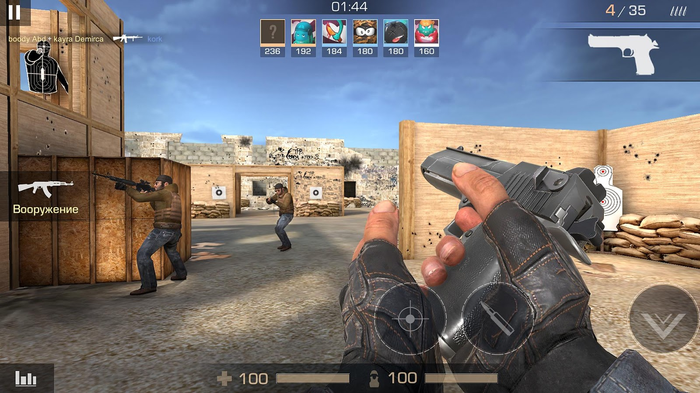
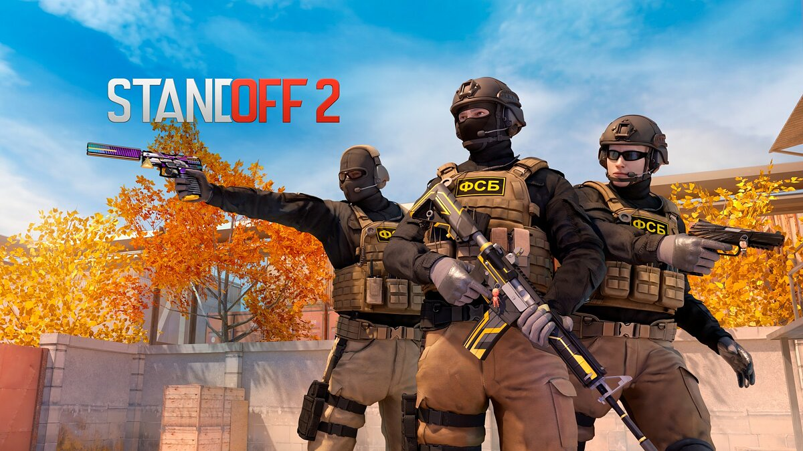

Standoff 2 представляет собой классический шутер от первого лица с различными режимами игры и арсеналом разного оружия. Каждое оружие обладает различным набором характеристик, ограничивающих тактические возможности игрока: пробиваемость брони, отдача, темп стрельбы, цена, награда за убийство, боезапас.
На начальных этапах игры доступны различные режимы игры, такие как закладка бомбы, командный бой, эскалация и другие. Когда игрок достигнет пятнадцатого уровня, ему откроется режим «Союзники», матчи в котором проходят в формате 2х2, а при достижении двадцатого — соревновательный
В отличие от большинства мобильных шутеров, в Standoff 2 отсутствует автострельба и помощь в наведении, но в то же время есть и гибкая настройка управления: возможность перемещать, изменять видимость и размеры большей части элементов интерфейса. За реальные деньги в игре продаются только декоративные предметы, не влияющие на игровой процесс.

